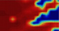
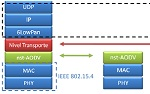
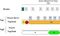
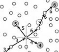
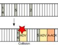

about publications bio academia teaching industry
selected projects | |
|

Wake-up Radio is a promising technology to enable energy-efficient, rendezvousless communication.
Papers: Globecom'10
Book Chapter: ISBN-1441961658

Transport layer study on WMN that will work on nst-AODV. 
Token-MAC for passive RFID systems to improve fairness and average tag read rate over C1G2 standard.
Papers: Globecom'11
|
Bluetooth Low Energy performance analysis.
Papers:
COMML (under revision)

RBMulticast for Ad Hoc NetworksStateless: no need for a multicast tree or neighbor info.

Advertisement-based MAC protocols for WSNA CSMA-based and a TDMA-based approach using advertisements. |